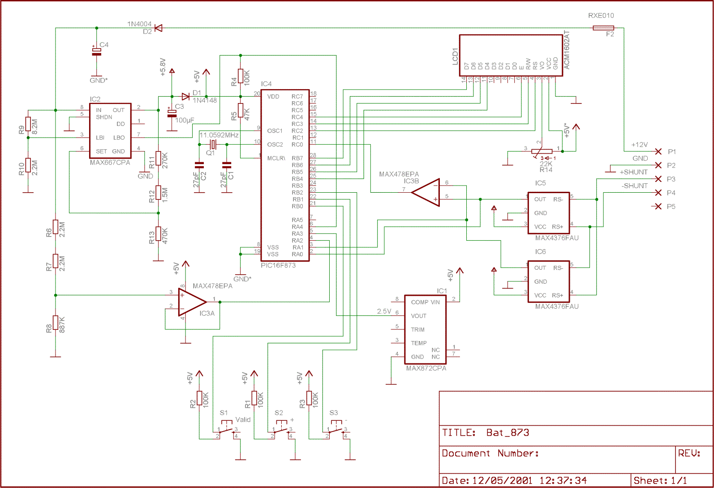
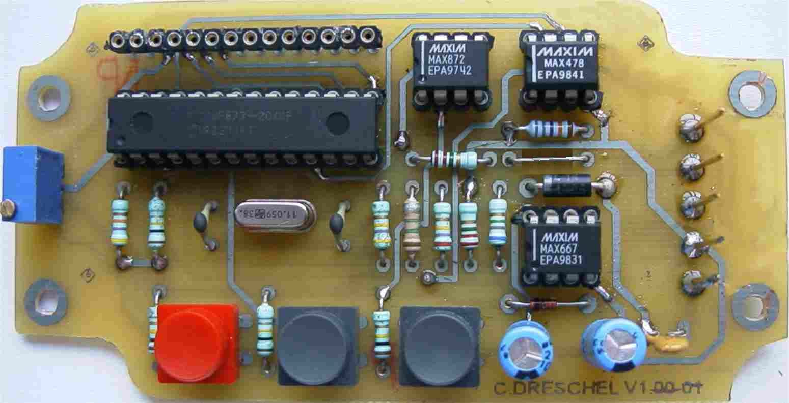

Schéma et Montage
Réalisation de l'électronique autour du PIC16F873 et des composants faible consommation.
Fichiers à télécharger
1. Le Schéma Électronique
Le montage est construit autour d'un microcontrôleur PIC16F873. Ses 4Ko de mémoire Flash, ses 22 lignes I/O, son convertisseur A/N 10 bits et sa faible consommation en font l'élément central idéal.

Schéma électronique complet (cliquez pour agrandir)
La consommation en courant est un paramètre critique : 2mA max pour l'afficheur LCD 2x16, 10µA pour le MAX872 (référence de tension), 20µA pour le MAX667 (régulateur), 1mA pour le MAX4376 (capteur de courant) et 17µA pour le MAX478 (AOP), soit une consommation totale inférieure à 7 mA.
2. Réalisation et Implantation

Implantation des composants sur le circuit imprimé
Remarque importante : À partir de la version V1.11, la résistance R7 de 2.2 MOhm est remplacée par un strap. Veillez également à bien souder les composants double-face et à contrôler les connexions des MAX4376 en boîtier miniature.